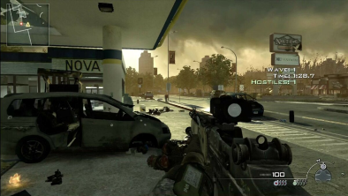

Итак не все сейчас могут позволить мощный пк и я сделал подборку слабых игр. Приятной игры.
Начнем с гонок и продолжим другими
Need For Speed: Underground
Игра очень хороша есть дрифт и хороший тюнинг для 2000Х Сис.Треб Проц: от 1700 МГц ОЗУ: 512 MB Видеокарта: 64 MB Звуковая карта: совместимое с DirectX® 9.0с Вес: 2 GB
Need For Speed: Underground 2
Игра эта 2 часть первого андеграунда Сис.Треб Проц: Intel(R) Pentium III или AMD Athlon 933 MHz ОЗУ: 512Мб Видеокарта: совместимая с Direct X 9.0c , 128 Мб Вес: 2GB
Need For Speed Most Wanted
Игра не сильно требовательная но хорошая для 2005 года Сис.Треб. Проц: 2 GHz Dual Core ОЗУ: 2GB Видеокарта: 512 МБ, совместимая с DirectX 9 Вес 3GB
Need for Speed: Carbon
Игра прямое продолжение most wanted 2006 года Сис.Треб Проц: 1.7 GHz ОЗУ: 512 Мб Видеокарта: 64 МБ, совместимая с DirectX 9 Вес 6GB
Need for Speed: Undercover
Игра уже не продолжение отдельная часть 2008 года Сис.Треб. Проц: Intel Pentium 4 2.8 ГГц ОЗУ: 2GB Видео-карта: класса Geforce 6500, Radeon 9500 Вес: 6.3 GB
Need for Speed World
Игра про целый город в Nfs Сис.Треб Проц: Двух-ядерный 2.1 GHz ОЗУ: 2 GB Видеокарта: 512 MB с поддержкой Shader Model 2.0 Вес: 4 GB
Need for Speed: The Run
Игра про то чтобы заработать денег и стать лучшим гонщиком Сис.Треб Проц: Intel Core 2 Duo ОЗУ: 3 GB Видеокарта: ATI Radeon 4870 / NVIDIA GeForce 8800 GT Вес: 15.2 GB
Need For Speed: Most Wanted (2012)
Игра по типу первой части но другая Сис.Треб Проц: 2 ГГц (Core 2 Duo 2,4 ГГц или Athlon X2 2,7 ГГц) ОЗУ: 2 GB Видеокарта: совместимая с DirectX 11, 1024 МБ Вес: 6.5 GB
Это были игры про гонки сейчас будут шутеры
Sniper Elite 1
Игра про снайпера который убивает немцев и забирает данные Сис.Треб Проц: 400 МГц ОЗУ: 128 МБ Видеокарта: с 32 МБ видеопамяти, совместимая с Direct3D Вес: 50 МБ
Sniper Elite V2
Игра прямое продолжение 1 части Сис.Треб Проц: Intel Pentium D @ 3 ГГц / AMD Athlon 64 X2 4200 ОЗУ: 2 GB Видеокарта: GeForce 8800 series / Radeon HD 3870 Вес: 9 GB
Sniper Elite 3
Игра тоже продолжение 2 части Сис.Треб Проц: Intel Core 2 Duo Family / AMD 64 X2 ОЗУ: 2 GB Видеокарта: NVIDIA® GeForce® 8800 series / ATI Radeon™ HD 3870 ATI Radeon HD 6670 / NVIDIA GeForce GT 640 Вес: 16 GB
Sniper Ghost Warrior
Игра про снайпера но под очень хорошим прекрытием Сис.Треб Проц: Pentium 4 2,4 GHz ОЗУ: 1 GB Видеокарта: 256 MB / DirectX 9.0c (GeForce 7600 GT / Radeon X1650) Вес: 5 GB
Sniper Ghost Warrior Contracts 2
Игра продолжение 1 части Сис.Треб Проц: Intel Core 2 Duo at 2Ghz, or AMD Athlon 64 x2 2GhzОЗУ: 2 GB Видеокарта: NVIDIA GeForce GTX560/ATI Radeon HD 5850 (512 minimum) Вес: 8 GB
Call of Duty 4 Modern Warfaere
Игра про войну с хорошей графикой Сис.Треб Проц: Intel Pentium 4 2,4 GHz, AMD Athlon 64 2800+ ОЗУ: 2 GB (XP) / 4 GB (Vista / 7) Видеокарта: Nvidia Geforce 6600 или Radeon Х1300 Вес: 5 GB
Call of Duty Modern Warfare 2
Это продолжение 1 части Сис.Треб Проц: Intel Pentium 4 3.2 ГГц или AMD Athlon 64 3200+ ОЗУ: 1 GB (Windows XP) / 2 GB (Windows Vista) Видеокарта: 256 Мб NVIDIA GeForce 6600GT Вес: 10 GB
Call of Duty Modern Warfaere 3
Игра это продолжение 2 части Сис.Треб Проц: Intel Core 2 Duo 2.4 Ghz / AMD Athlon 64 X2 5000+ ОЗУ: 4 GB Видеокарта: NVIDIA GeForce™ 8600 / ATI Radeon HD 2600 Pro Вес: 18 GB
Tom Clancy's Splinter Cell
Игра для тех кто любят стелсс он тут на высоком уровне советую Сис.Треб Проц: Pentium III ОЗУ: 256 MB Видеокарта: 64 MB Вес: 1.5 GB
Tom Clancy's Splinter Cell Chaos Theory
Игра продолжение 1 части но с улученной графикой Сис.Треб Проц: 2000 MHz Pentium® IV/AMD ОЗУ: 512 Мб Видеокарта: 128 Мб DirectX 9-совместимая Вес: 4 GB
Battlefield 3
Игра похожа на Call of duty но более сложная Сис.Треб Проц: Core 2 Duo 2.4 ГГц или Athlon X2 2.7 ГГц ОЗУ: 2 GB Видеокарта: 512 МБ совместимые с DirectX 10.1 Вес: 20 GB
А теперь 2 игры песочницы
WorldBox
Игра песочница очень прикольная делай свое королевство или апокалепсис Сис.Треб Проц: 2.0 Ghz ОЗУ: 2 GB Видеокарта: 128 MB Вес: 1 GB
Mindustry
Игра очень сложная для настоящих людей которые хотят делать роботов Сис.Треб Проц: 2 Ghz ОЗУ: 1 GB Видеокарта: OpenGL 2.0 Support Вес: 130 MB